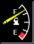

This example demonstrates a fuel-tank like meters, in which the meter is labelled by an icon and the scale shows text abbreviations.
The scale labels on the meter is created by using
BaseMeter.setScale2. The icon is created by adding a text box with
BaseChart.addText and using
CDML to specify an icon.
The following is the command line version of the code in "cppdemo/iconameter". The MFC version of the code is in "mfcdemo/mfcdemo". The Qt Widgets version of the code is in "qtdemo/qtdemo". The QML/Qt Quick version of the code is in "qmldemo/qmldemo".
#include "chartdir.h"
int main(int argc, char *argv[])
{
// The value to display on the meter
double value = 85;
// Create an AugularMeter object of size 70 x 90 pixels, using black background with a 2 pixel
// 3D depressed border.
AngularMeter* m = new AngularMeter(70, 90, 0, 0, -2);
// Use white on black color palette for default text and line colors
m->setColors(Chart::whiteOnBlackPalette);
// Set the meter center at (10, 45), with radius 50 pixels, and span from 135 to 45 degrees
m->setMeter(10, 45, 50, 135, 45);
// Set meter scale from 0 - 100, with the specified labels
const char* labels[] = {"E", " ", " ", " ", "F"};
const int labels_size = (int)(sizeof(labels)/sizeof(*labels));
m->setScale(0, 100, StringArray(labels, labels_size));
// Set the angular arc and major tick width to 2 pixels
m->setLineWidth(2, 2);
// Add a red zone at 0 - 15
m->addZone(0, 15, 0xff3333);
// Add an icon at (25, 35)
m->addText(25, 35, "<*img=gas.png*>");
// Add a yellow (ffff00) pointer at the specified value
m->addPointer(value, 0xffff00);
// Output the chart
m->makeChart("iconameter.png");
//free up resources
delete m;
return 0;
}
© 2023 Advanced Software Engineering Limited. All rights reserved.